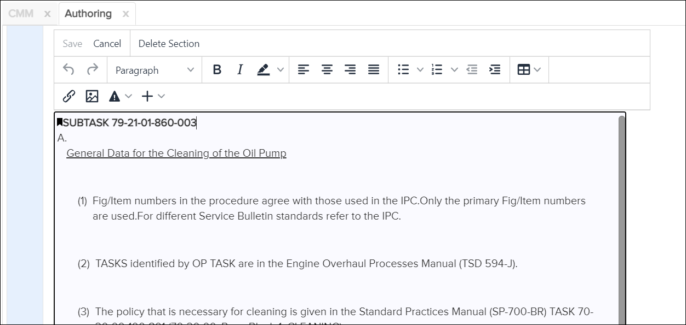

Not applicable for Pinpoint Standalone Light.
The organization can choose one of the below options to delete the section.
- Permanent Deletion
- Deletion in Progress
Permanent Deletion
Deleting a section removes it permanently from the document. Before deleting a section, you should remove all attachments, annotations, and references to it or move those to a different section. Once you delete the section, these elements will no longer display correctly.
-
In the left margin of the Content pane, click the
 Edit content within this section icon for the section you
want to delete. The selected section is available.
For example:
Edit content within this section icon for the section you
want to delete. The selected section is available.
For example:
Authoring Tab - Section Open to Delete